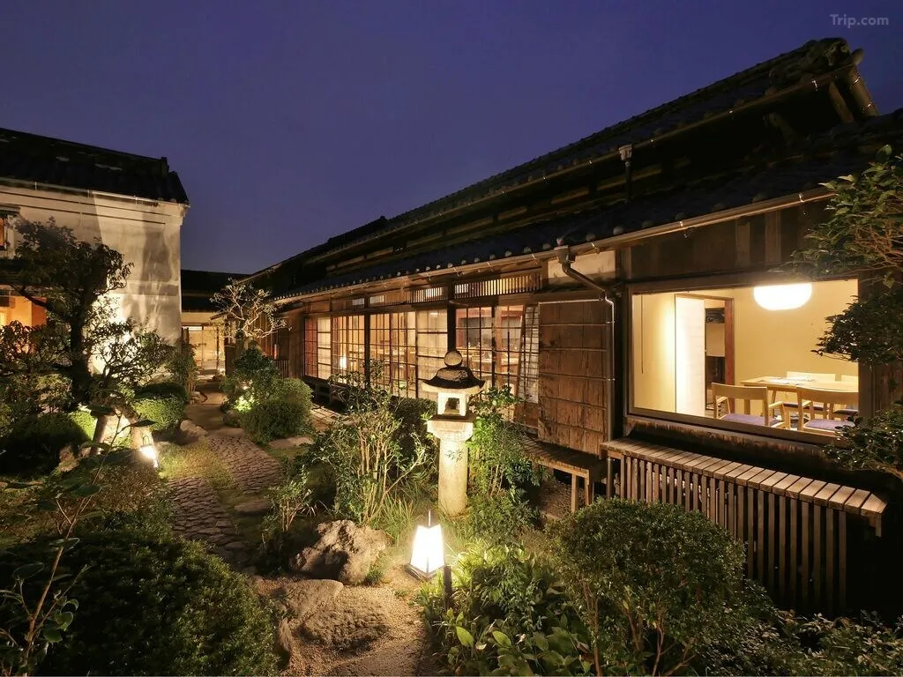
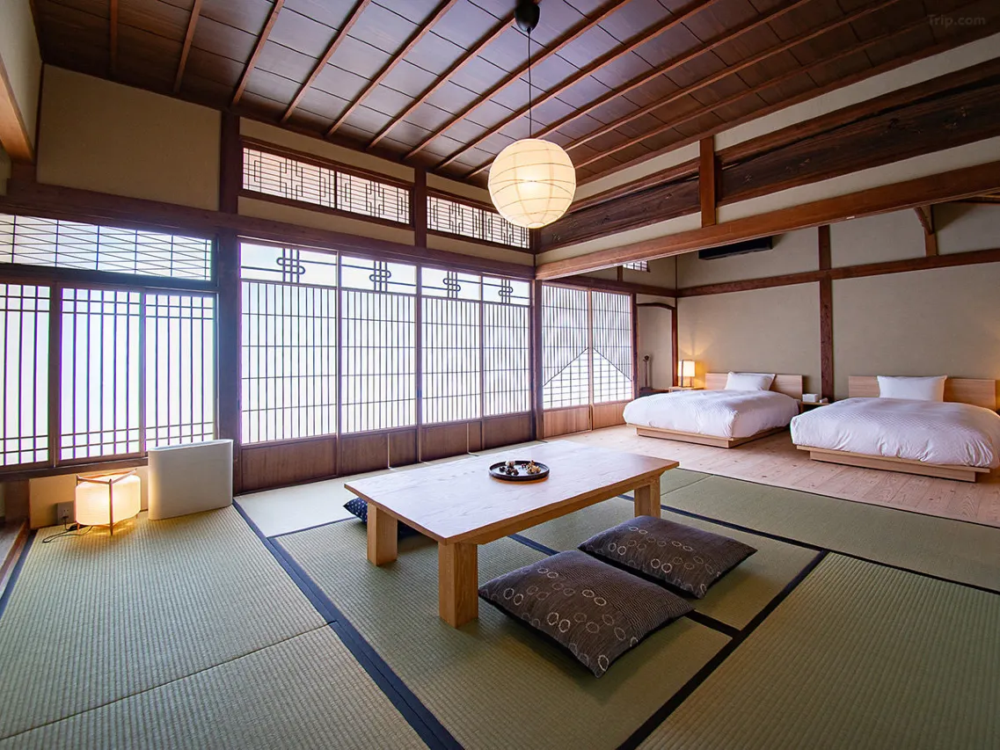
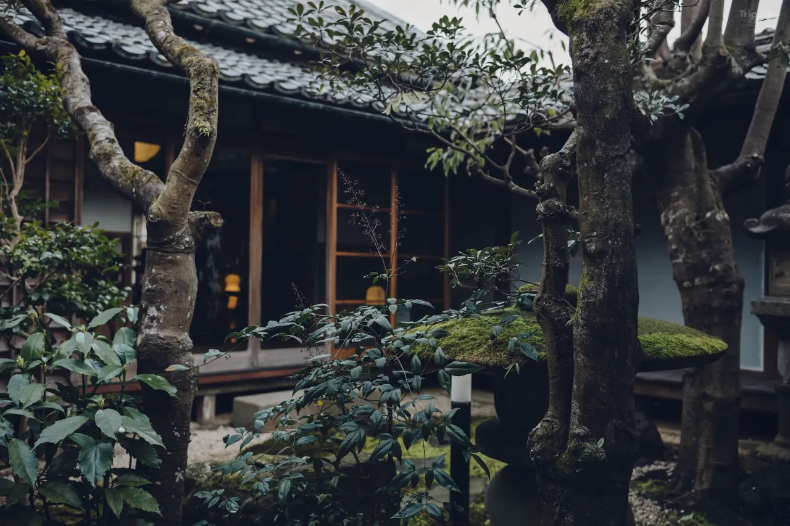
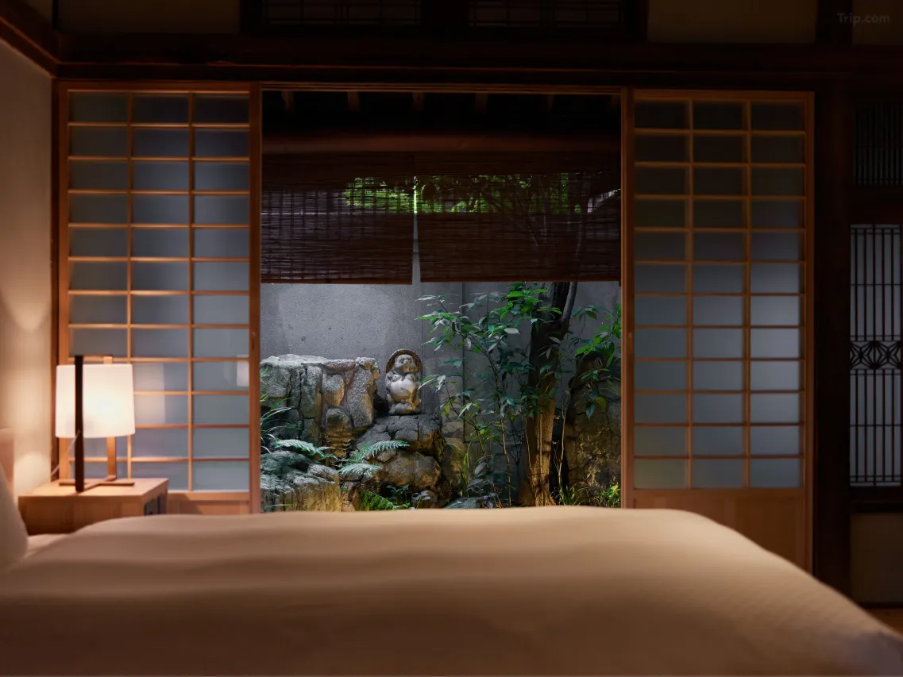
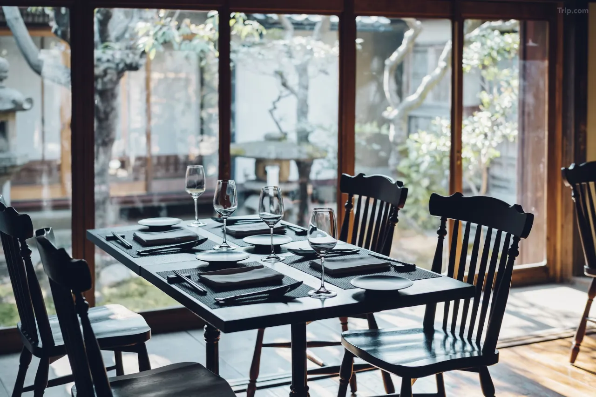
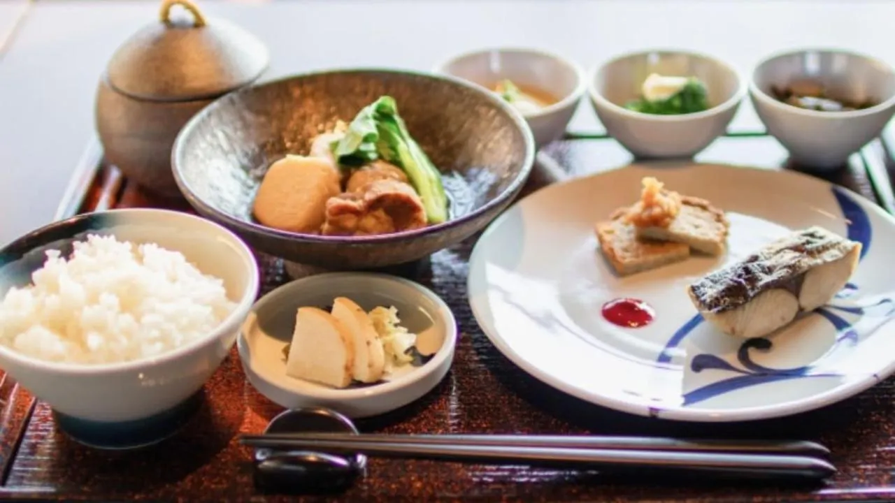
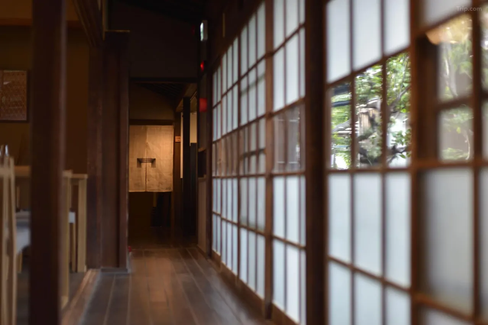
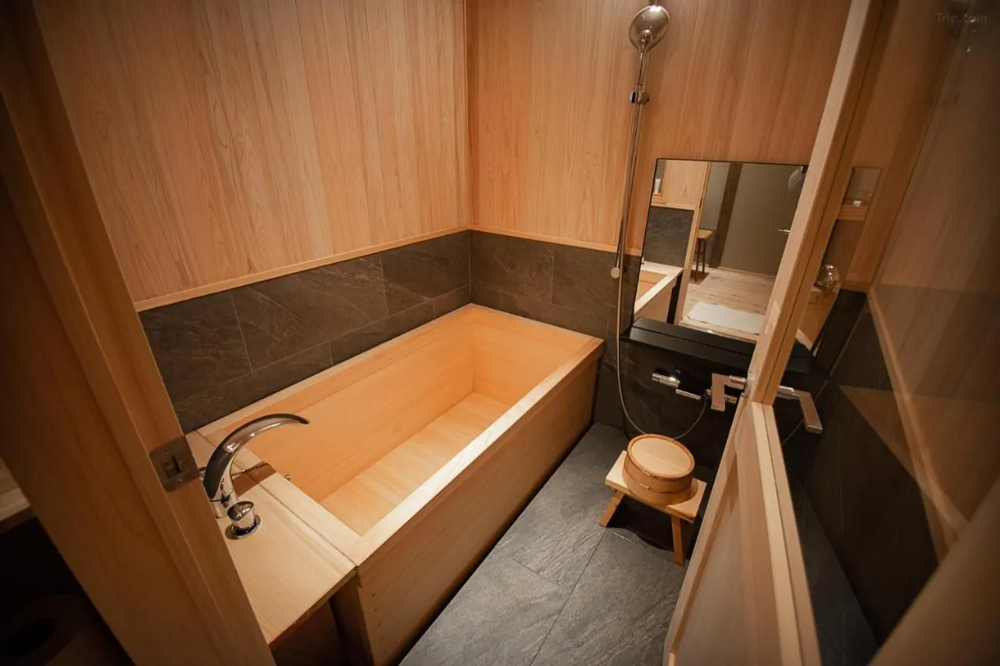

One minute from Dazaifu Tenmangu Shrine — and thirty minutes by bus and foot from the mountain where Tanjiro Kamado's name, his checkered haori, and the Hinokami Kagura breathing technique all originate — Hotel Cultia Dazaifu occupies four restored buildings that the Yoshitsugu family of artists and priests preserved through the Edo, Meiji, Taisho, and Showa eras without demolition. The sooty walls, discolored clay, and scratched pillars have been left exactly as they were found. The hinoki cypress bathtubs were made by hand by local craftsmen. The restaurant serves Kyushu ingredients cooked with French technique in a dining room that has looked essentially the same for 120 years. There are thirteen rooms in total. When it is fully booked, Dazaifu's most significant accommodation is unreachable.
For the Demon Slayer pilgrim, the positioning is precise. Homangu Kamado Shrine — built on Mt. Homan specifically to guard Dazaifu's Demon Gate, its monks historically training in green-and-black checkered garments nearly identical to Tanjiro's haori, its New Year's Eve Kagura fire dance mirroring the Hinokami Kagura technique — is 30 minutes from Hotel Cultia by bus plus a 30-minute hike up Mt. Homan. This is Location 03 of the complete Demon Slayer pilgrimage, and Hotel Cultia is its only logical base.
The Buildings: Four Structures, One Century of History

Hotel Cultia Dazaifu is a decentralized hotel — its four buildings (Kokouan, Koukotei, Baika, and the main reception building) are distributed within a short walk of each other through Dazaifu's shrine-gate shopping district. This layout is a design philosophy rather than a logistical compromise. The Cultia team's position is that the town itself is part of the accommodation: walking between buildings means walking through a shrine town that has operated continuously since the 7th century, past plum trees that bloom in February, along streets where the same families have run the same businesses for generations.
Each building was restored with the philosophy of preservation over renovation. Sooty ceilings from decades of cooking fires were not whitewashed — they remain as evidence of the lives lived inside. Clay walls with their natural discoloration were stabilized rather than replastered. Scratched and worn pillars were treated and left in place. The result is accommodation that reads as genuinely old rather than decoratively antique — the difference between a building that has been inhabited for 120 years and a building designed to look like it has.
Koukotei and Baika, added to the hotel in 2021, stand in an area that once served as Dazaifu Tenmangu's kitchen — where seafood and mountain produce were received before being delivered to the shrine's priests. Their ornate windows and woodwork represent the Meiji era's confidence in its own aesthetic: the period when Japan had absorbed enough Western architectural influence to produce something genuinely hybrid rather than merely imitative. The rooms inside these buildings are among the most photographed in the hotel.
The Rooms: Thirteen, Each Different

Thirteen rooms across four buildings, each shaped by the specific history of the structure it occupies. Some are configured as Japanese tatami rooms with straw mat flooring and low furniture. Others blend Western bed configurations with traditional architectural elements — shoji screens, tokonoma alcoves, engawa verandas overlooking private gardens. The room sizes vary between approximately 35 and 44 square meters, generous by Japanese boutique hotel standards.
The detail that guests return to most consistently in reviews is the hinoki cypress bathtub: handmade by local craftsmen, present in select rooms, and producing the specific aromatic quality of fresh cypress wood that deepens with steam. This is not a decorative feature — hinoki cypress has been the preferred material for Japanese bath construction for over a thousand years, its essential oils released by hot water producing an atmosphere that no manufactured material replicates. Booking a room with a cypress bathtub requires specifying this preference at reservation; availability is limited.
All rooms include yukata, the highest quality Japanese-made linens and toiletries, climate control, free WiFi, and bidet-equipped bathrooms. Check-in runs from 3 PM to 8 PM — a narrower window than most hotels, reflecting the small-staff, intimate-hospitality model of boutique accommodation in Japan. Check-out is at 11 AM.
Exclusive Experiences: After Dark at the Shrine
Hotel Cultia Dazaifu's most significant offering for the Demon Slayer pilgrim is not its rooms but its exclusive access program. Hotel guests can arrange — through the concierge — a private after-hours visit to Dazaifu Tenmangu Shrine after it closes to the general public. A Shinto priest in ceremonial attire escorts guests through the entrance reserved for priests and special worshippers, to the main sanctuary building where a purification rite is performed accompanied by bell-ringing that echoes through the empty hall. The shrine grounds, fully populated with tourists by day, become intimate and genuinely sacred after dark.
This experience sits in direct alignment with the Demon Slayer pilgrimage's deeper logic. The series is, at its core, about the relationship between human beings and the spiritual forces that move through the landscape of Japan — the demons, the Hashira, the Kamado family's fire ritual, all operating within a Shinto cosmology that treats nature and history as spiritually inhabited. Standing in Dazaifu Tenmangu's inner sanctuary at night, listening to bells ring through empty shrine halls, is not decorative atmosphere. It is the underlying reality that the anime dramatizes.
Additional exclusive programs include a Saturday-evening after-hours tour of the Kyushu National Museum (one of Japan's five national museums, a 10-minute walk from the hotel), morning worship at the shrine at 8:30 AM, and guided hikes up Mt. Homan — the mountain that houses Kamado Shrine. The Mt. Homan hike, arranged through the hotel's concierge, is the most direct route to the pilgrimage's sacred site and the most logistically convenient way to reach it.
Dining: French Technique, Kyushu Ingredients
The Le Un restaurant occupies a Meiji-era building with 44 seats and one private room. Lunch is light French cuisine with locally sourced Fukuoka ingredients; dinner is a multi-course banquet of Kyushu meats, Genkai Sea fish, and mountain produce prepared with French technical precision. The afternoon tea service — traditional scones, carefully selected teas and coffees — runs between the lunch and dinner services. Breakfast is Japanese, prepared with fresh regional ingredients and served in a calm dining room where morning light comes through the original windows at an angle that changes by season.
Practical Information
- Check-in: 3:00 PM–8:00 PM Check-out: 11:00 AM
- Rooms: 13 rooms across 4 buildings — Kokouan, Koukotei, Baika, main building
- Highlight: Handcrafted hinoki cypress bathtubs in select rooms — specify at booking
- Exclusive access: After-dark Dazaifu Tenmangu Shrine visit (arrange via concierge)
- Dining: Le Un restaurant — French-Kyushu fusion, lunch, dinner, afternoon tea; Japanese breakfast
- To Kamado Shrine: Bus from Dazaifu Station + 30-min hike up Mt. Homan (guided option via concierge)
- From Fukuoka: Nishitetsu Omuta Line from Tenjin Station to Dazaifu Station (~30 min)
- From Fukuoka Airport: Approximately 7.5 miles / 20 minutes by car
- Best season: February–March for 6,000 plum trees in bloom at Dazaifu Tenmangu
| Full Name | Hotel Cultia Dazaifu (ホテルカルティア太宰府) |
| Address | 4-7-1 Saifu, Dazaifu City, Fukuoka Prefecture 818-0117 |
| Anime Connection | Demon Slayer — base for Homangu Kamado Shrine pilgrimage (Location 03) |
| Buildings | 4 restored structures — Kokouan, Koukotei, Baika, main building (Meiji/Taisho era) |
| Rooms | 13 rooms — tatami and Western configurations; select rooms with cypress bathtubs |
| Exclusive Experience | After-hours Dazaifu Tenmangu Shrine access with Shinto priest (guest-only) |
| Dining | Le Un — French-Kyushu cuisine; Japanese breakfast |
| Nearest Station | Dazaifu Station (Nishitetsu) — 1-min walk to shrine, 30 min to Kamado Shrine |
| From Fukuoka/Tenjin | ~30 min by Nishitetsu Omuta Line |
Photo Gallery

Photo 1
Photo 2
Photo 3'">
Photo 4'">
Photo 5'">
Photo 6'">Sleep Inside Demon Slayer's Kyushu
Thirteen rooms. After-dark shrine access. Thirty minutes from the real Kamado Shrine.
Planning the full Demon Slayer pilgrimage? Read the complete guide: Tracing the Blade — Every Real-Life Demon Slayer Location in Japan →
← Back to Stay